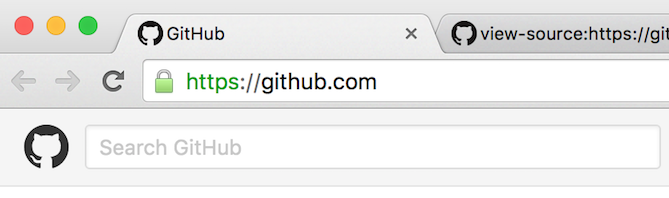
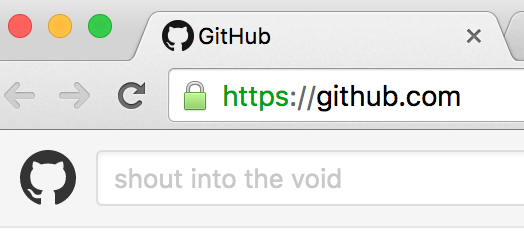
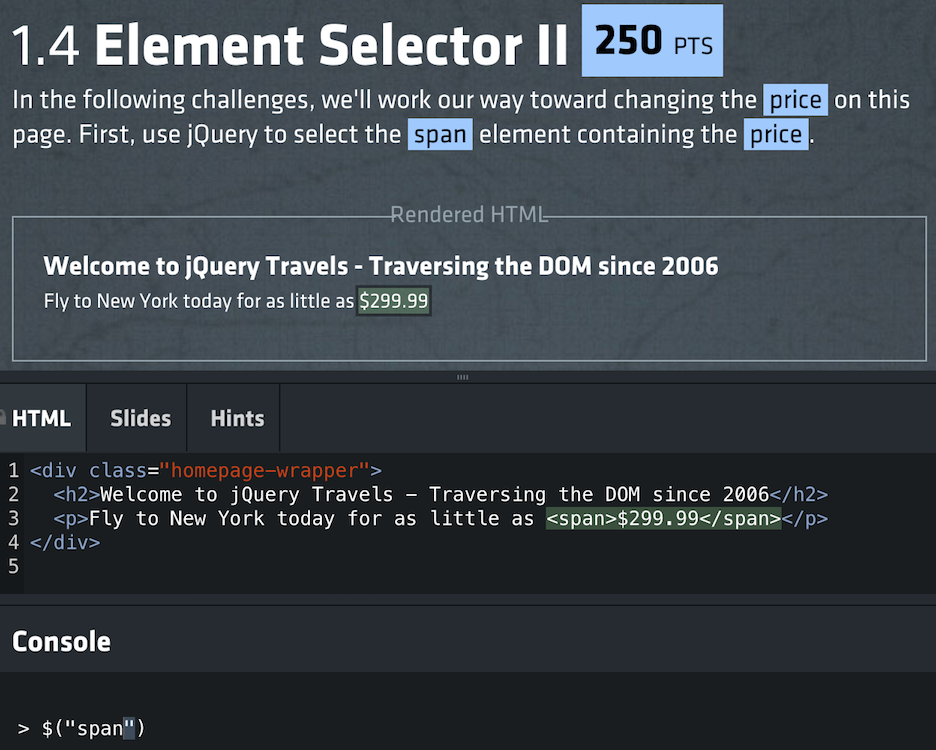

The DOM & jQuery
JS and HTML:s bastard childSections in this chapter
Introducing the DOM
DOM DOM DOM!
In a nutshell: the DOM is the bridge between JS and HTML:
Another way of putting it: the HTML is the recipe and the DOM is the dish.
The DOM is the browser's internal representation of the HTML.
We've already seen the DOM in the Elements tab in the dev tools, and noted it looks an awful lot like our HTML.
But that's just because we haven't involved JavaScript yet. JavaScript can manipulate the DOM. The DOM is not constant.
We interact with the DOM from JS space through the global document variable. Go to a website and try this in the console:
document.body.setAttribute("style","background-color:red;")
Through document.body we got an HTML node, an object that represents an element. On that we can...
- call the
setAttributemethod like we just did - query attributes using the
getAttributemethod - change its content by assigning to
innerHTMLortextContent - iterate over child nodes using the
childrenproperty, allowing us to walk down the tree. - go back up the tree using the parent property.
We don't have to walk the tree from body, there are several methods for find a specific node or set of nodes on document:
getElementById("someId")getElementsByClassName("someClass")getElementsByTagName("div")
And, there are two new methods which gets elements using CSS selectors:
- **
querySelector("#someId") querySelectorAll("article > p")
The only difference is that querySelector always return 0 or 1 elements, while querySelectorAll returns a list.
Question: All those words, but we still don't know what DOM stands for?
Answer: Sorry! The Document Object Model.
Attributes VS properties
You say potato
Two important words: HTML elements have attributes but DOM nodes have properties.
Usually, but not always, the former initializes the latter:
To showcase the difference, let's play with the search field on http://github.com:

If we snoop on the source code, we can see that the placeholder attribute is set to the text we saw in the image:
<input type="text"
class="form-control header-search-input js-site-search-focus "
data-hotkey="s"
name="q"
placeholder="Search GitHub"
aria-label="Search GitHub"
data-unscoped-placeholder="Search GitHub"
data-scoped-placeholder="Search"
autocapitalize="off">
The search field is the second input element in the page, so we can get a reference to the node like this:
var field = document.getElementsByTagName("input")[1];
Using that reference we can confirm the value of the placeholder attribute:
field.getAttribute("placeholder") // "Search GitHub";
We can also see that a placeholder property was initialized to the same value:
field.placeholder // "Search GitHub";
Now for the fun part - if we change the property to something else...
field.placeholder = "shout into the void";
...we will immediately see the browser update:

But! If we query the placeholder attribute again, we'll see that it hasn't changed!
field.getAttribute("placeholder") // "Search GitHub";
To wit:
- HTML elements have attributes, and DOM nodes have properties.
- Attributes often initialize properties (but not always)
- Attributes never change, but properties can change.
Catching DOM events
True interaction at last!
With CSS, the only interaction we could offer was some animations using :hover and :active.
But now is the time for some true user interaction!
The DOM lets us add event listeners to elements. These are functions that will be called whenever that particular event happen on that element.
Say we have this button in our document:
<button id="doomsdaybtn">Don't click me!</button>
And a reference to the corresponding node:
var btn = document.getElementById("doomsdaybtn");
We now create a function to be used as an event listener...
var listener = function(){
alert("BOOM!");
}
...and attach it using the addEventListener method on the node:
btn.addEventListener("click",listener);
We could also add the anonymous function directly:
btn.addEventListener("click",function(){
alert("BOOM!");
});
Now when the user clicks the button, the event handler function will run!
The handler will be called with an event object that describes what just happened. These differ depending on what event we were listening to.
What you just saw is the cornerstone of user interaction. We add event listeners to make things happen when the user does stuff!
There is a full list of events at MDN:
Although we can add listener to any elements, the most common use case is with form elements. We've mentioned buttons and inputs, but there are many more! MDN again has a full list:
https://developer.mozilla.org/en-US/docs/Web/Guide/HTML/Forms
Exercise - my first form
Because we all love questionnaires
Let's get you acquainted with the DOM, events and form elements by - you guessed it - building a form!
Here's your task in detail:
- Make an html document containing a simple form
- The form should include a submission button
- Add an event handler to run upon submission
- In that handler, collect all the user input and log it to the console!
A good start is likely to spend some time on the MDN form pages that we linked before, or some other good resource, to get familiar with form elements and event handling.
You don't have to submit your solution, so when your done, just give a yell!
jQuery
What is the fuss about?
As life on Earth is based on carbon, so is the internet based on jQuery.

The library functionality is exposed through a global jQuery object created when we run the code. It also has $ alias if you want to be more succinct.
jQuery === $ // true
jQuery achieved its popularity through four good ideas:
We'll now talk through them one by one!
First off, using CSS selectors to match elements.
var firstParagraph = $("p:first-child");
The success of this idea was what caused querySelector(All) to be added to regular CSS.
Second, the façade - jQuery made better methods to interact with the DOM, and ensures that they work the same in all browsers:
firstParagraph.addClass("fadeanim");
The jQuery façade has less value now since
- browsers are much more standards compliant
- the DOM has been much improved
But it is still pretty nice!
Third, implicit looping - if a jQuery selection catches multiple elements, we can still act on all elements with a single method call:
var buttons = $("button");
buttons.setAttribute("disabled");
Some methods make no sense to use on many elements at once - they will operate on the first element in the selection.
Finally, chaining. All jQuery methods return the selection we were working on which means that instead of this:
var buttons = $("button");
buttons.setAttribute("disabled");
We can do this:
$("button").setAttribute("disabled");
Although the need for jQuery has diminished, it is still very popular.
And as its API is rather easy, using jQuery can be a better way to learn the DOM than the DOM itself!
So: definitely learn jQuery, but make sure to also understand what is actually going on.
Practice from time to time to do it without jQuery.
Ending by zooming out; this is what you'll be doing with jQuery most of the time:
$(someSelector).someMethod();
We
- select some elements, and
- do something with them
Exercise - jQuery
Drinking the coolaid
Armed with a basic understanding of jQuery, we're now going to get started on their bootcamp!
It is an interactive tutorial somewhat reminiscent of the games we've been playing with for other techniques.
Go to http://try.jquery.com and you'll see this:

Working through the screenshot top to bottom, a challenge consists of:
- an instruction up top telling you what to do
- rendered HTML code with currently selected elements highlighted
- the HTML code that has been rendered
- a console where you enter JS code and use jQuery
The tutorial does a good job of gradually introducing new concepts and ramping up difficulty.
And as progress is saved between sessions, there is nothing to lose by getting started right now! Try it out for a bit so you get the hang of it, and finish it later if you want!
Demo - a community effort
Dynamifying the game
Let's try something different - I'll now lead a mob programming exercise where we together rebuild the game from scratch using JavaScript.
We'll cover basic jQuery usage, but also how to think when we design our data model and structure our code!
The end
...or perhaps the beginning?